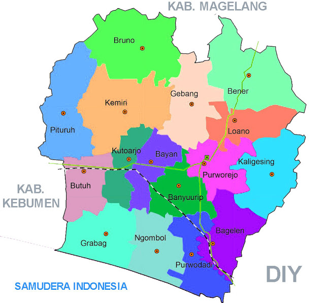
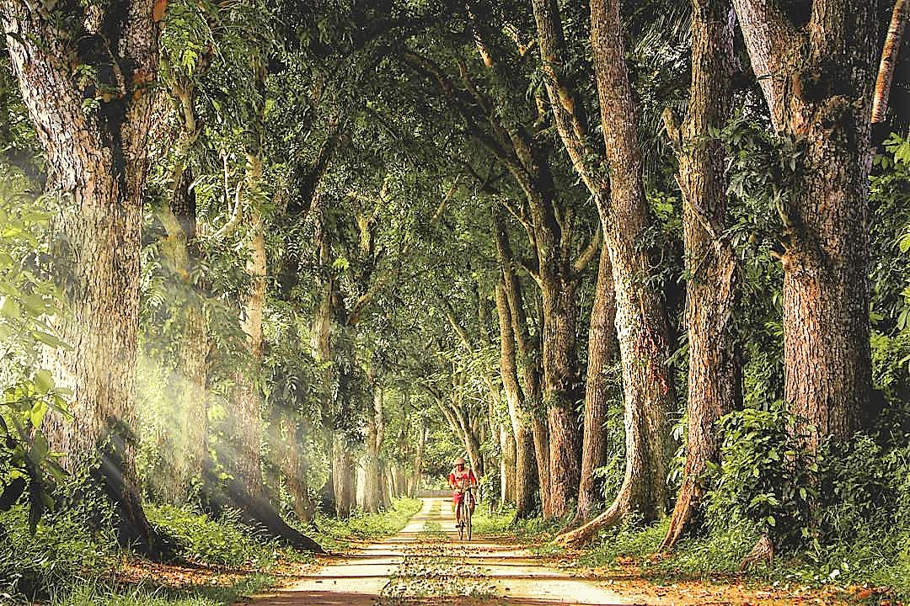

Sejarah
Sejak jaman dahulu wilayah kabupaten Purworejo lebih dikenal sebagai wilayah tanah Bagelen. Kawasan yang sangat disegani oleh wilayah lain, karena dalam sejarah mencatat sejumlah tokoh. Misalnya dalam pengembangan agama Islam di Jawa tanah Selatan, tokoh Sunan Geseng dikenal sebagai Ulama besar yang meng-Islam-kan wilayah dari timur sungai Lukola dan pengaruhnya sampai ke Daerah Istimewa Yogyakarta dan Kabupaten Magelang.
Dalam perang Diponegoro abad ke XIX, wilayah Tanah Bagelen juga menjadi ajang pertempuran karena pangeran Diponegoro mendapat dukungan luas dari masyarakat setempat. Pada Perang Diponegoro itu, wilayah Bagelen dijadikan karesidenan dan masuk dalam kekuasaan Hindia Belanda dengan ibu kotanya Kota Purworejo. Wilayah karesidenan Bagelen dibagi menjadi beberapa kadipaten, antara lain kadipaten Semawung (Kutoarjo) dan Kadipaten Purworejo dipimpin oleh Bupati Pertama raden Adipati Cokronegoro Pertama. Dalam perkembangannya, Kadipaten Semawung (Kutoarjo) kemudian digabung dengan Kadipaten Purworejo.
Tahun 1936, Gubernur Jenderal Hindia Belanda merubah administrasi pemerintah di Kedu Selatan, Kabupaten Karanganyar dan Ambal digabungkan menjadi satu dengan Kebumen dan menjadi Kabupaten Kebumen. Sedangkan Kabupaten Kutoarjo juga digabungkan dengan Purworejo, ditambah sejumlah wilayah yang dahulu masuk administrasi Kabupaten Urut Sewu/Ledok menjadi Kabupaten Purworejo. Sedangkan Kabupaten Ledok menjadi Kabupaten Wonosobo. Dalam perkembangan sejarahnya Kabupaten Purworejo dikenal sebagai pelopor di bidang pendidikan dan dikenal sebagai wilayah yang menghasilkan tenaga kerja di bidang pendidikan dan dikenal sebagai wilayah yang menghasilkan tenaga kerja di bidang pendidikan, pertanian dan militer. Tokoh-tokoh yang muncul antara lain WR Supratman Komponis lagu Kebangsaan “Indonesia Raya”. Jenderal Urip Sumoharjo, Jenderal A.Yani, Sarwo Edy Wibowo dan sebagainya.
Geografis

Kabupaten Purworejo merupakan salah satu Kabupaten di Provinsi Jawa Tengah yang terletak antara 109 o 47’28’’ sampai 110 o 8’20” Bujur Timur dan antara 7 o 32’’ sampai 7 o 54’’ Lintang Selatan. Sebelah Utara Kabupaten Purworejo berbatasan dengan Kabupaten Wonosobo dan Magelang dan sebelah selatan berbatasan dengan Samudra Indonesia. Sebelah barat berbatasan dengan Kabupaten Kebumen dan sebelah timur berbatasan dengan wilayah Daerah Istimewa Yogyakarta tepatnya Kabupaten Kulonprogo.
Kabupaten Purworejo terbagi dalam 16 kecamatan dan 494 desa/kelurahan. Wilayah Kabupaten Purworejo pada tahun 2016 mempunyai luas 103.481 ha atau sekitar 3,18 persen dari luas Provinsi Jawa Tengah. Lahan seluas 103.481 ha di Kabupaten Purworejo terdiri dari 87.105 ha (84,18 persen) lahan pertanian dan 16.375 ha (15,82 persen) bukan lahan pertanian. Lahan pertanian yang ada digunakan sebagai lahan sawah 30.225 ha (34,70 persen) dan bukan lahan sawah 56.880 ha (65,30 persen).
Pembagian Administrasi Perkecamatan
| No |
Kecamatan |
Desa |
Dusun |
| 1 |
Grabag |
32 |
117 |
| 2 |
Ngombol |
57 |
82 |
| 3 |
Purwodadi |
40 |
102 |
| 4 |
Bagelen |
17 |
73 |
| 5 |
Kaligesing |
21 |
81 |
| 6 |
Purworejo |
11 |
61 |
| 7 |
Banyuurip |
24 |
105 |
| 8 |
Bayan |
25 |
89 |
| 9 |
Kutoarjo |
21 |
77 |
| 10 |
Butuh |
41 |
105 |
| 11 |
Pituruh |
49 |
156 |
| 12 |
Kemiri |
40 |
143 |
| 13 |
Bruno |
18 |
105 |
| 14 |
Gebang |
24 |
118 |
| 15 |
Loano |
21 |
112 |
| 16 |
Bener |
28 |
134 |
Wisata
Purworejo dikarunia pemandangan alam yang istimewa. Bentang alam dan lanskap yang menawan membuat potensi wisata yang ada pun terus berkembang. Tidak salah jika destinasi wisata di Purworejo menjadi jauh lebih beragam dari beberapa tahun ke belakang.
Gunung Kunir
Gunung Kunir adalah salah satu destinasi wisata di Purworejo yang paling populer dan terkenal akan pesona keindahan alam perbukitannya. Jalur trekking yang cukup menantang tidak menjadi masalah karena nantinya akan terbayar sebegitu kamu mencapai puncak Gunung Kunir. Kawasan ini sudah dikelola oleh pemerintah setempat dengan baik, sehingga untuk jalurnya sudah ada tangga menuju puncaknya.
Deret Mahoni

Jalan masuk desa dari jalur utama, alias Jalan Daendels Purworejo memang memiliki magis keindahan tersendiri. Jalan lurus dengan kiri kanan pepohonan mahoni besar yang rimbun sukses menjadi daya tarik bagi banyak orang. Bagi yang ingin menambah koleksi foto di akun media sosialnya, tidak boleh melewatkan destinasi wisata di Purworejo ini, ya! Lokasi: Krajan, Nampurejo, Purwodadi, Kabupaten Purworejo, Jawa Tengah
Informasi Lainnya
| Negara |
Indonesia |
| Hari jadi |
27 Februari 183 |
| Luas Total |
1.035 km2 |
| Bahasa Daerah |
Jawa |
| Kode Telepon |
+62 275 |
Sosial Media